SWING
An emulator for finely adjusting etch depths during the course of ion beam etching
Contents
initialization
close all; clear all; clc if ~exist('data', 'dir') mkdir('data') end
Generate the etch-depth map
Generate etch-depth map based on the following code:
[f,x,y] = rsgeng2D (N,rL,h,clx,cly)
- DESCRIPTION: Random rough surface generator of two-dimensional (isotropic and non-isotropic) square surfaces with Gaussian hdf and Gaussian acf.
- INPUT: N-number of surface points, rL-length of surface side, h-rms height, clx-correlation length in x, cly-correlation length in y
- OUTPUT: f-surface heights, x-surface points, y-surface points
Credit: http://www.mysimlabs.com/surface_generation.html
Source code: rsgeng2D.m
Example:
% [z, x, y] = rsgeng2D(400,40,0.4,20,12); % % r_z = 0.1; % z_targ = 20; % z_max = max(z(:)); % z_min = min(z(:)); % % depth = z_targ * (1 - r_z/(z_max-z_min)*(z_max-z)); % % figure, mesh(x, y, depth) % titleStr = sprintf('max: %d, min %d', max(depth(:)), min(depth(:))); % title(titleStr) % % save('data/ETCH_DEPTH.mat', 'depth') % save the matrix that contains designed etch depth load('data/ETCH_DEPTH.mat', 'depth') % load designed etch depth map figure, mesh(depth) titleStr = sprintf('max: %d, min %d', max(depth(:)), min(depth(:))); title(titleStr)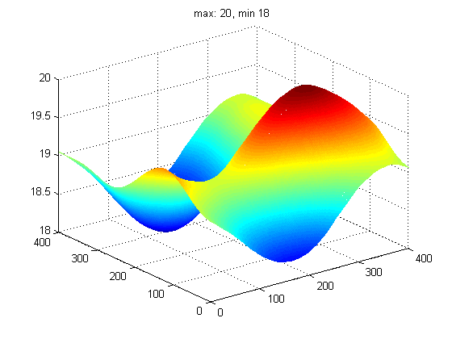
Raster scanning over the etch-depth map
Transform the etch-depth map into the rastered etch-depth map using the raster scanning algorithm.
[r, dwellTime, strokeTime, maxTunableRatio, strkSet] = rascan(depth, nTiers, ionBeamWidth, leafWidth, etchRate, showImage);
Source code: rascan.m, rascanOpt.m
- parameters optimization
% load data/ETCH_DEPTH.mat % load etch-depth map leafWidth = 60; % mm etchRate = 0.75; % provided that mean etch rate is 0.75 nm/s N = [2 4 6]; % list of number of tiers W = [12 36 60]; % ion beam widths % call the script for parameters optimization useDefaultSettings = false; rascanOpt
Ion beam width: 12 mm, Number of tiers: 2, RMSD: 0.012398 The mean etch time is selected as the baseline of etch times Ion beam width: 36 mm, Number of tiers: 2, RMSD: 0.037562 The mean etch time is selected as the baseline of etch times Ion beam width: 60 mm, Number of tiers: 2, RMSD: 0.062368 The mean etch time is selected as the baseline of etch times Ion beam width: 12 mm, Number of tiers: 4, RMSD: 0.006681 The mean etch time is selected as the baseline of etch times Ion beam width: 36 mm, Number of tiers: 4, RMSD: 0.022382 The mean etch time is selected as the baseline of etch times Ion beam width: 60 mm, Number of tiers: 4, RMSD: 0.042176 The mean etch time is selected as the baseline of etch times Ion beam width: 12 mm, Number of tiers: 6, RMSD: 0.004978 The mean etch time is selected as the baseline of etch times Ion beam width: 36 mm, Number of tiers: 6, RMSD: 0.018320 The mean etch time is selected as the baseline of etch times Ion beam width: 60 mm, Number of tiers: 6, RMSD: 0.037137 The mean etch time is selected as the baseline of etch times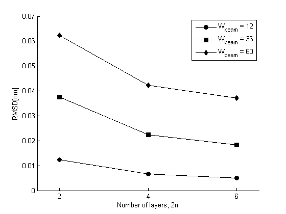 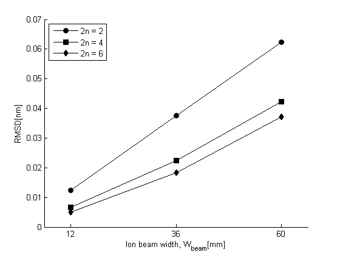
- run raster scanning (including calculation of dwell times)
- Layering: The scanning path is divided into a number of directional line segments or vectors.
- Reducing: The two-dimension ribbons is reduced into one-dimension ribbons by averaging the data of ribbons along the minor axis.
- Superposing: All the layers are superposed via point-to-point mapping and then the rastered etch depth map is stacked up.
- Calculation of dwell times
x1 = 0.5:399.5; % mm, 400 points in total y1 = 0.5:399.5; % mm z1 = depth; % in nm figure('Name','etch depth map (mesh)') mesh(x1, y1, z1) axis ij view([-32.5000, 75.0000]) nTiers = 2; % the number of tiers should be even, such as 2, 4, 6 ... ionBeamWidth = 36; % mm showImage = true; [r, dwellTime, strokeTime, maxEtchDepthContrast, strkSet] = rascan(depth, nTiers, ionBeamWidth, leafWidth, etchRate, showImage); % fileName = sprintf('data/DWELL_TIME_%d_%d_%0.6f.mat', nTiers, ionBeamWidth, now); % save(fileName, 'dwellTime', 'strokeTime', 'maxEtchDepthContrast', 'strkSet') % disp(['... saved as ' fileName])
Ion beam width: 36 mm, Number of tiers: 2, RMSD: 0.037562 The mean etch time is selected as the baseline of etch times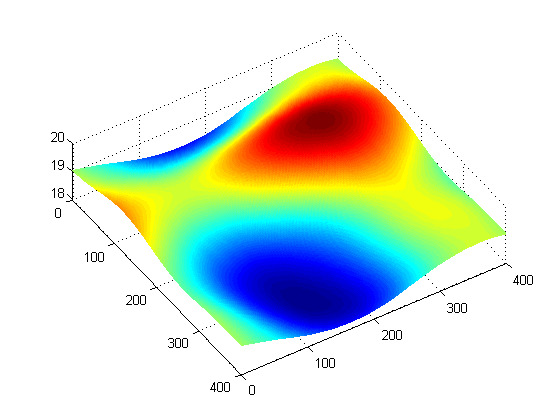 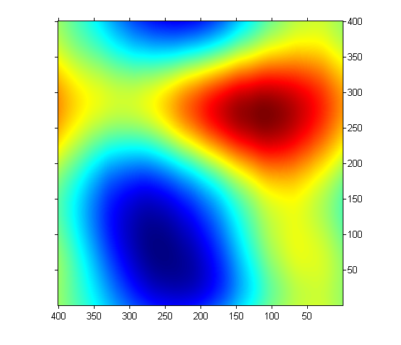 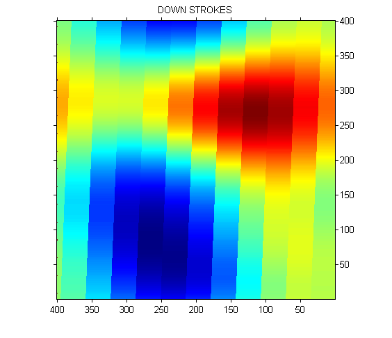 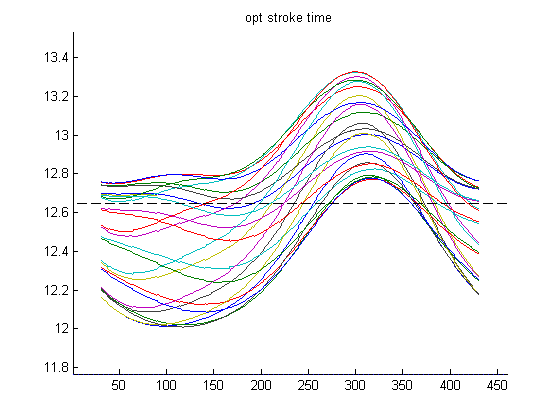 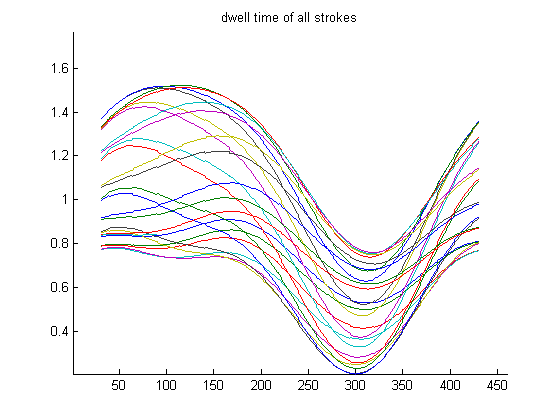
- Considering the non-uniformity of etch rate Simulation of the ion beam current density distribution
[exErrMap, errMap, mus] = beamdist(nMajor, nMinor, nMajorRands, nMinorSamps, lambda, nsig)
Source code: beamdist.m, beamdistRun.m
vStroke = 460; % vertical stroke (mm) % ionBeamWidth = 36; % mm nMajorRands = 12; nMinorSamps = 8; lambda = 8/100; % +/-4% deviations nSig = 0.6 * ionBeamWidth/60; % call the script for generating the ion beam current density distribution useDefaultSettings = false; beamdistRun k_e = 0.6157; % etch rate over ion current density etchRateVector = etchRate + k_e * (yy - mean(yy)); % yy is the ion current density [r, dwellTime, strokeTime, maxEtchDepthContrast, strkSet] = rascan(depth, nTiers, ionBeamWidth, leafWidth, etchRateVector, showImage); % fileName = sprintf('data/_DWELL_TIME_%d_%d_%0.6f.mat', nTiers, ionBeamWidth, now); % save(fileName, 'dwellTime', 'strokeTime', 'maxEtchDepthContrast', 'strkSet') % disp(['... saved as ' fileName])
Ion beam width: 36 mm, Number of tiers: 2, RMSD: 0.037562 Warning: The range of etch times cannot be fully covered.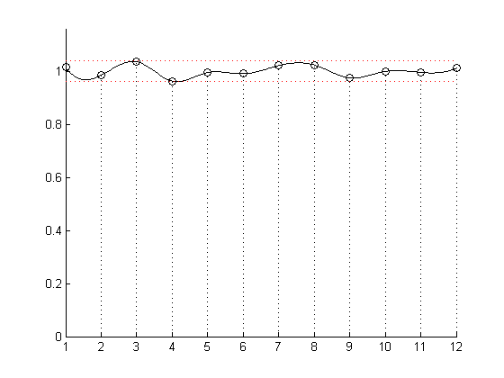 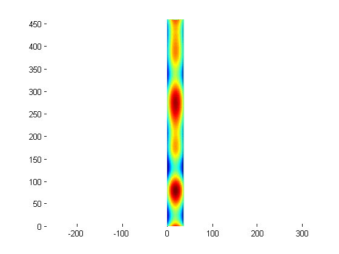 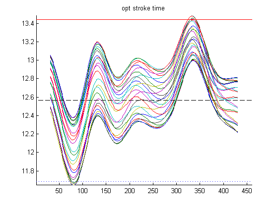 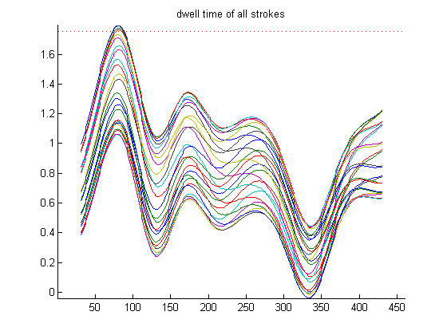
Trajectory optimization using pattern search
See trajectory optimization in a new page.
Generate data table for PLC
Generate the data table containing pulse frequencies and pulse numbers.
[pulseFreqs, pulseNums, nRamps, crtSteps] = dataopt(wa, wd, wf, w1, w2, crt, strokeTime);
Source code: dataopt.m, dataoptRun.m
% load stroke time latestDwellFile = selatest('data', 'DWELL_TIME_*.mat'); load(latestDwellFile, 'strokeTime'); % load optimization results latestOptFile = selatest('data', 'OPT_RESULT_*.mat'); load(latestOptFile, 'C', 'params'); % call the script for generating the data table useDefaultSettings = false; dataoptRun % save results fileName = ['data/DATA_TABLE_' num2str(now, 12) '.mat']; save(fileName, 'DataTable', 'DataTable2'); disp(['... saved as ' fileName])
... saved as data/DATA_TABLE_735941.660718.mat
convert data table into CSV format See data2csvTest.m for details.
data2csvTest
Error model for feasibility analysis
Evaluate the errors introduced by all the processes
outDwellTime = data2dwell(strokeTime, strkSet, C, DataTable, leafWidth, stepAngleDeg, timeStep);
outEtchDepth = dwell2depth(strkSet, inDwellTime, strokeTime, etchRate, ionBeamWidth);
Source code: errormodelRun.m, data2dwell.m, dwell2depth.m
% load caculated data % load('data/ETCH_DEPTH.mat', 'depth'); load(selatest('data', 'DWELL_TIME_*.mat'), 'strokeTime', 'strkSet', 'dwellTime'); load(selatest('data', 'OPT_RESULT_*.mat'), 'C', 'optDwellTime', 'rmsds'); load(selatest('data', 'DATA_TABLE_*.mat'), 'DataTable'); % leafWidth = 60; % 60 mm stepAngleDeg = 1.8 / 8; timeStep = 0.001; % 1 ms % ionBeamWidth = 36; % mm % etchRate = 0.75; % call the script for the feasibility analysis useDefaultSettings = false; errormodelRun % considering the non-uniformity of etch rate etchRate = etchRateVector'; % call the script for the feasibility analysis useDefaultSettings = false; errormodelRun
Ion beam width: 36, Number of layers: 2 RMSD: (s) 0.0102 0.0119 0.0138 0.0133 0.0239 0.0192 0.0222 0.0178 0.0151 0.00728 0.00937 0.0158 0.023 0.00978 0.0108 0.0128 0.0278 0.026 0.02 0.0215 0.0193 0.00681 0.00539 0.0124 0.0129 Ion beam width: 36, Number of layers: 2 RMSD: (s) 0.0102 0.0119 0.0138 0.0133 0.0239 0.0192 0.0222 0.0178 0.0151 0.00728 0.00937 0.0158 0.023 0.00978 0.0108 0.0128 0.0278 0.026 0.02 0.0215 0.0193 0.00681 0.00539 0.0124 0.0129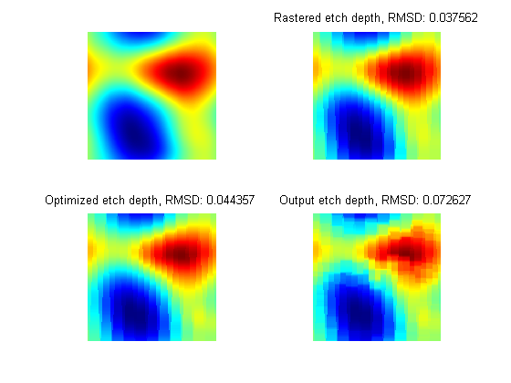 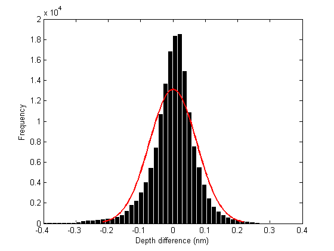 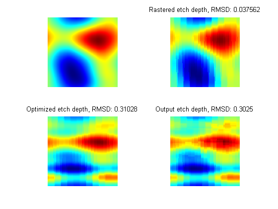 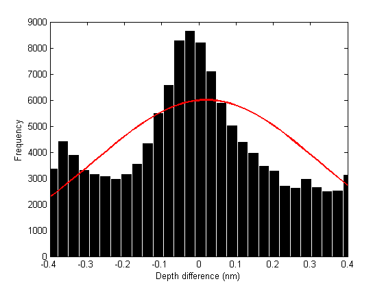